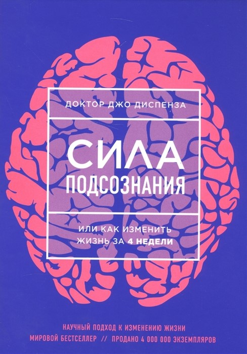
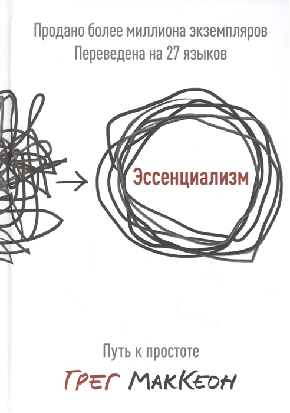
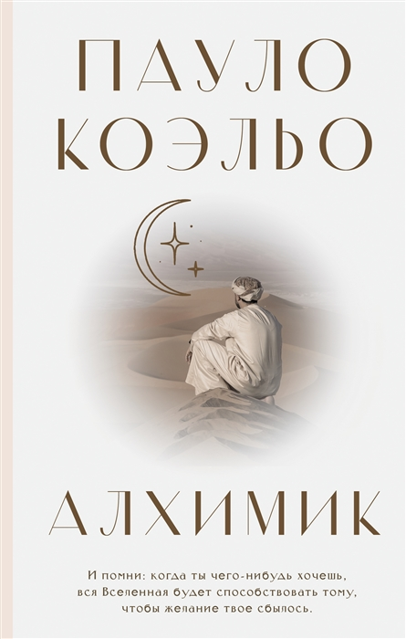
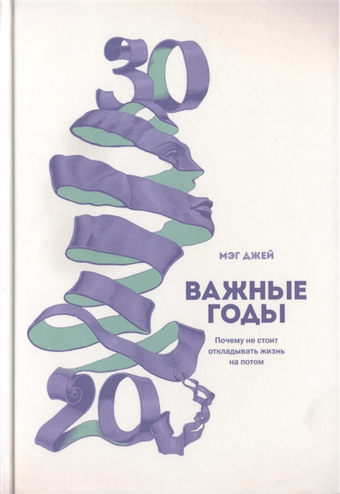
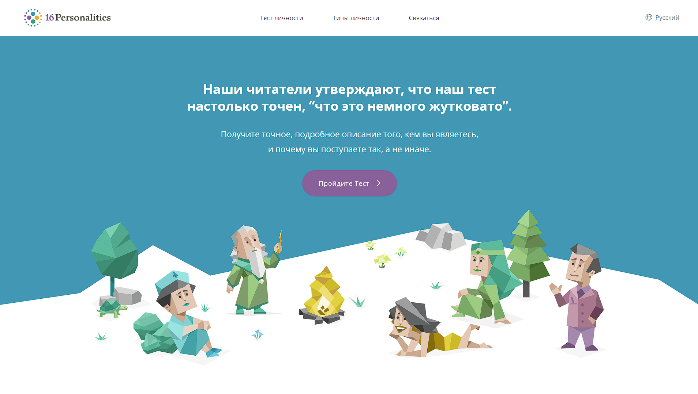
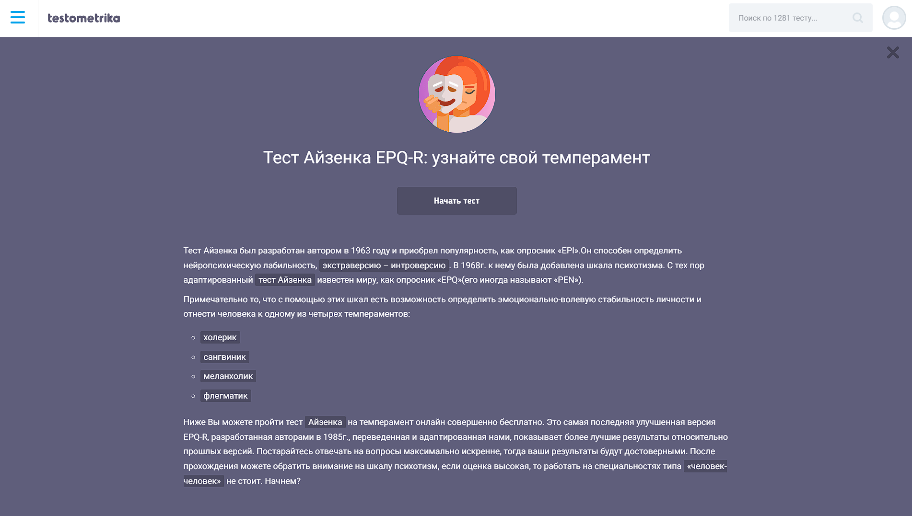
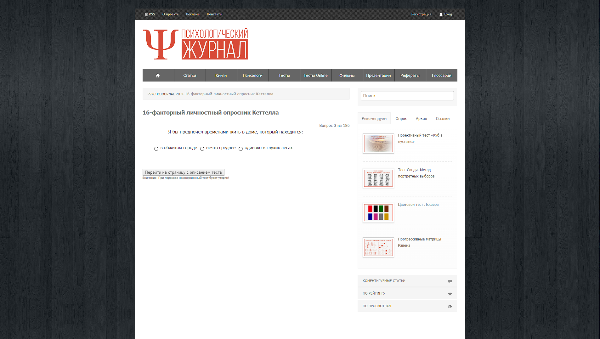

Все мы рано или поздно оказываемся на распутье, когда в старой привычной жизни нам становится тесно и некомфортно, а новая пугает неизвестностью и неопределенностью. Человек задумывается над тем, зачем он пришел в этот мир, в чем его предназначение, какой жизнью он хотел бы жить. Неудовлетворенность собой и жизнью толкает на поиски своего уникального пути. Возникает желание реализовать себя в работе и в творчестве. Случиться это может в любом возрасте - как в 16, так и в 50 лет. Сейчас мы можем все чаще замечать, что даже дети-подростки младше 16 лет начинают задумываться над эти вопросом, но не все в состояние понять себя и то, чего они хотят от себя, от других и в целом от своей жизни.
Автор: Попова Светлана Дата: 19.12.2021
СОДЕРЖАНИЕ:
- 1. Как найти себя: советы и упражнения
- 1.1 Составьте свою автобиографию
- 1.2 Чем вы любили заниматься в детстве?
- 1.3 Начните опираться на свои силы
- 1.4 Не старайтесь нравиться всем
- 1.5 Пройдите психологические тесты
- 2. Что мешает нам находить свое «я»?
- 3. Почему важно найти себя?
- 4. Подборка книг
- 5. Полезные материалы для поиска своего «я»
- 6. Психологические тесты
- 7. Заключение
Как найти себя: советы и упражнения
Иногда чтобы найти себя, нужно попробовать поработать с разными видами информации и подумать, что ближе, что доставляет большее удовольствие. Поэтому мы подготовили для вас подборку советов и упражнений, которые могут Вам пригодиться.
1) Составьте свою автобиографию
Выделите время, чтобы сесть и записать на листе бумаги все ключевые события вашей жизни. Эмоции постарайтесь отставить в сторону, чтобы они вам не мешали. Проанализируйте все события без восторгов и сожалений. Обдумайте каждый свой выбор. Честно ответьте на вопросы ниже, не пытаясь ничего приукрасить и утаить от себя. Именно в наших воспоминаниях хранится ключ к познанию себя. • Что сподвигло вас поступить так, а не иначе? • Был ли это в полной мере ваш выбор, или за вас его сделали родители, среда, общество? • В какие моменты вы чувствовали себя по-настоящему счастливым и были самим собой?2) Чем вы любили заниматься в детстве?
Склонности и таланты начинают проявляться уже в раннем возрасте. Востановите в памяти свои любимые детские занятия. Если сами не можете вспомнить - расспросите родителей. Может, вы очень любили рисовать? Или самозабвенно танцевали часы напролет? А может, вы просто обожали наблюдать за жуками и гусеницами? Попробуйте возродить ваши детские увлечения. Возможно, именно в них заключено ваше истинное предназначение, заглушенное и отправленное в глубинные слои психики. Откопайте его, отряхните от пыли и начните потихоньку восстанавливать. Не отчаивайтесь, если у вас не получится сразу. Проявите терпение и упорство.3) Начните опираться на свои силы
Уверенность в своих силах — это ключ к нахождению своего «я». Если у вас нет твердого чувства собственного достоинства, вы будете постоянно прислушиваться к тому, что говорят другие, к их пониманию, что такое хорошо, плохо или что такое прилично. Научитесь верить в себя и верить собственным чувствам. Потом вы откроете в себе новое «я». Помните, будьте терпеливы и уверенны в собственных возможностях. Все придет со временем.4) Не старайтесь нравиться всем
Согласитесь: некоторые люди относятся к вам плохо независимо от того, что вы делаете. Важно не замечать их мнения, потому что всем не угодишь. Вы, вероятно, не хотите разочаровывать близких вам людей, но и они должны желать вам счастья. До тех пор, пока вы не перестанете жить в соответствии с представлениями других о том, кем вы должны быть, вы никогда не познаете себя настоящего. Эту мысль удачно подытожил Реймонд Халл: «Тот, кто ограничивает себя, чтобы удовлетворить других, скоро себя потеряет».5) Пройдите психологические тесты
Если вы не можете найти свое предназначение и разобраться в себе сами, воспользуйтесь вспомогательными материалами. Существует множество психологических тестов, которые определяют особенности характера и склонности человека. Часто их используют при профориентации, чтобы помочь человеку определиться с будущей профессией.Что мешает нам находить свое «я»?
В новую жизнь нужно идти налегке, чтобы ничего не тянуло вас назад и не клонило к земле. Поэтому первым делом нужно избавиться от ненужного багажа. Приготовьтесь очистить вашу душу от хлама, накопившегося за годы жизни не своей жизнью.
• Сожаления о прошлом
Давайте договоримся считать точкой отсчета вашей новой жизни сегодняшний день, а прошлое оставить позади. Того, что случилось, уже не изменить, сколько ни посыпай голову пеплом. Сожаления будут только отнимать время и силы, мешая вам двигаться вперед.
• Обвинения себя и других
Если вы считаете, что что-то сделали не так, упустили возможности, не использовали предоставленные судьбой шансы, простите себя за это. Сбросьте с плеч эту тяжелую ношу и вдохните полной грудью. Никто из нас не идеален, и корить себя за это бессмысленно. Обвинять обстоятельства и других людей в своих неудачах тоже контрпродуктивно. Таким образом мы буквально расписываемся в собственном бессилии. К тому же на скамье подсудимых чаще всего оказываются самые дорогие и близкие люди – родители, родственники, друзья. Остановите расследование и прекратите поиск виноватых. Дело закрыто.
• Вы не в контакте с собой
Многие люди живут на автомате, выполняя то, что привыкли, не задумываясь о своих действиях и не неся ответственность за свою жизнь. В результате они не в ладах с собой: не понимают сильных и слабых сторон, не развивают свои таланты.
• Лень и бездействие
Многие люди хотят поменять себя и свою жизнь к лучшему, но все это ограничивается лишь желаниями. И всему виной является простая человеческая лень. От лени нужно избавляться как можно скорее, потому что она наносит вред не только познанию себя, но и любой сфере деятельности, не давай достичь успеха и полностью насладиться жизнью.
• Страхи
Наконец, есть страхи. Даже нелюбимая работа обеспечивает стабильность. А менять ее человек не спешит, поскольку не знает, что его ждет впереди. И заставить его сделать шаг в неизвестность не может даже заветная мечта. В то же время он может фантазировать о том, что когда-нибудь она станет реальностью. И к слову, это еще одна причина когда кажется, что жизнь прошла, а мечты, так и остались мечтами.
• Стереотипы
Стереотипы – основная причина, почему люди живут не своей жизнью. Если слепо им следовать, заглушая голос своего Я, рано или поздно окажешься в тупике. Или в яме – кому как повезет. Если вы слышите одну из следующих фраз, знайте – перед вами стереотип. Не дайте ему разрушить ваши планы и мечты. 1. “Танцами, музыкой, рисованием на жизнь не заработаешь” 2. “Это все несерьезно” 3. “После 30 лет невозможно поменять профессию” 4. “Большие деньги честным путем не получишь” 5. “Уже поздно этим заниматься, надо было начинать еще в детстве” 6. “Без связей никуда не пробьешься”
Почему важно найти себя?
Так уж сложилось, что план на жизнь мы составляем в достаточно юном возрасте. Школьники в 16–17 лет вынуждены решать, чему посвятить свою жизнь. Однако в силу особенностей образовательной системы и юного возраста большинство озабочены не поиском предназначения, а поиском более престижной профессии, которая поможет добиться более высокого уровня жизни и положения в обществе. «Сначала деньги, а смысл потом приложится» – так думает большинство. На некоторых давление оказывают родители со своим видением идеального будущего для ребенка, а некоторые ограничены в выборе из-за места проживания, финансового достатка семьи или состояния здоровья. Проходит время, беззаботные студенческие годы позади, у человека есть стабильная работа, возможно, семья, но временами возникает чувство, что он не на своем месте. Возможно, он становится выдающимся специалистом в своей области, добивается высокого положения и материального достатка, но всё равно не чувствует удовольствия от жизни. Это тот самый случай, когда выбранный путь привел к большим деньгам, но смысл так и не приложился.
Поиск себя заключается не только в профессиональной деятельности. Реализовать себя можно через хобби, воспитание детей, творчество – всё это может не приносить дохода. Путь у каждого свой, как и цель поиска предназначения. Делается это ради того, чтобы чувствовать себя цельной и гармоничной личностью. Пока вы занимаетесь тем, что не приносит удовольствия, вы не будете чувствовать себя в гармонии. Вот почему найти себя и осознать свое предназначение – это так важно.
Существует мнение, что возросшая частота ментальных проблем, таких как апатия, депрессия, бессонница, эмоциональное выгорание, во многом связана с невозможностью себя реализовать. Всё чаще люди выбирают профессию не по зову сердца, а из финансовых побуждений, что и становится причиной внутреннего дисбаланса.
Подборка книг
-

Рисовый штурм и еще 21 способ мыслить нестандартно
Часто мы не можем найти себя, потому что ограничены рамками и стереотипами. Эта книга вдохновит вас мыслить нестандартно. С помощью увлекательных упражнений, головоломок и загадок вы научитесь создавать оригинальные идеи, которые помогут в работе и в жизни.
Купить -

Эссенциализм. Путь к простоте
Вы постоянно работаете, но совсем не продуктивны? Чувствуете, что ваше время тратится на чужие дела? Эссенциализм – это не про то, как успевать больше за меньшее количество времени, а про то, как делать только то, что нужно. Книга Грега МакКеона поможет отбросить всё ненужное и сконцентрироваться на действительно важном.
Купить -
Предназначение. Найти дело жизни и реализовать свои мечты
Книга рассказывает о подсознании и его влиянии на нас. Автор книги, профессор нейрохимии и нейробиологии Джо Диспенза, предлагает четырёхнедельную программу преображения жизни, которая основана на научном подходе. Из книги вы узнаете, как устроен ваш мозг и что делать, чтобы он работал на исполнение желаний.
Купить -
Никогда-нибудь. Как выйти из тупика и найти себя
Книга рассказывает о том, как решиться на перемены, уйти с нелюбимой работы и перестать откладывать жизнь на потом. Практические техники помогут вам разобраться в себе, а детальный авторский план – решить проблему «хочу, но не знаю, с чего начать».
Купить -
Смелость не нравиться. Как полюбить себя, найти свое призвание и выбрать счастье
Можно ли просто ВЫБРАТЬ для себя счастье? Психолог Альфред Адлер дал на этот вопрос однозначный ответ. Внутри каждого человека есть особенная сила – смелость быть собой, жить так, как хочется, и идти по своему пути. В книге Ичиро Кишими и Фумитаке Кога философия Адлера переплетается с восточной мудростью, открывая новый, свободный способ мышления, разрушая границы, мешающие реализовать ваш потенциал на 100%.
Купить -
Монах, который продал свой феррари
Как не стать рабом своей работы, заложником рутины, участником бесконечной гонки за призраком достатка? Можно ли обрести комфорт, гармонию и счастье, не жертвуя здоровьем, нервами, отношениями с близкими? Как найти путь, который позволит дойти до цели без потерь и разочарований? Здесь вы найдете ответы на все эти вопросы!
Купить -

Алхимик
«Алхимик» – самый известный роман бразильского писателя Пауло Коэльо, любимая книга миллионов людей во всем мире. В юности люди не боятся мечтать, все кажется им возможным. Но проходит время, и таинственная сила принимается им внушать, что их желания неосуществимы. «Добиться воплощения своей Судьбы – вот единственная подлинная обязанность человека…», – утверждает Пауло Коэльо. Этот, ставший культовым, роман-притча способен изменить жизнь своих читателей.
Предзаказ -

Важные годы. Почему не стоит откладывать жизнь на потом
Книга клинического психолога Мэг Джей рассказывает о десятилетии, которое определяет судьбу человека – отрезок с 20 до 30 лет. Мэг уверена, что инвестиции в этот период принесут максимальную отдачу в будущем. Такие выводы она сделала на основе работы с сотнями студентов и клиентов, истории которых вошли в книгу.
Купить
Полезные материалы для поиска своего «я»
Я собрала самые интересные и качественные подборки видео на ютубе, которые могли бы заинтересовать каждого.
Думаю здесь нужно меньше слов, так как обо всем остальном вы можете послушать ниже.
Специально для вас, я также оставлю ссылки на сайты, где брала информоцию для себя.
Спасибо большое, за полезный контент:
1) WikiHow - Как найти себя
2) В своем доме - Как найти себя в этом мире и полностью реализовать свой потенциал
3) СиЗОЖ - Как найти себя в жизни: лучшие способы понять путь человека
Психологические тесты
Если вы не можете самостоятельно найти свое предназначение и разобраться в себе, воспользуйтесь вспомогательными материалами. Существует множество психологических тестов, которые определяют особенности характера и склонности человека. Часто их используют при профориентации, чтобы помочь человеку определиться с будущей профессией. Я собрала для вас список подходящих тестов, которые помогут вам лучше понять себя и найти свое место под солнцем. Постарайтесь ответить на вопросы честно.
1) Тест на тип личности MBTI

С помощью MBTI теста определяется, как люди воспринимают мир и принимают решения.
Многие западные компании требуют прохождения теста Майерс-Бриггс при трудоустройстве.
Также, по данным авторов Википедии,
около 70% американских выпускников проходят тестирование с целью узнать свои сильные стороны
и выбрать будущую профессию.
Да и в целом он даёт возможность для самоанализа.
16Personalities позволяет пройти тест не
просто удобно, но и приятно. На их сайте также есть описание любого типа личности, представленное в подробном и
увлекательном формате.
2) Тест Айзенка

Определять тип темперамента ученые пытались издавна и по настоящее время.
Личностный опросник психолога-экспериментатора Г. Айзенка (EPI) –
это классическая методика, предложенная в 1963 году на основе двух его предшествующих тестов.
Теоретическую основу составляют понятия «экстраверсия», «интроверсия» и «нейротизм», которые автор понимал,
как генетически обусловленные характеристики ЦНС.
Этот тест пользуется популярностью и в настоящее время – за счет своей простой инструкции, доступной обработки
и возможности пройти онлайн в сети Интернет быстро и бесплатно.
testometrika
Я считаю этот сайт самым удобным и простым.
На нем вы также найдете большое разнообразие других тестов, что сократит вам время на поиски и даст большие результат,
чем прохождение всего лишь одного тестирования.
3) Тест Кеттелла

Личностный 16-ти факторный опросник Р. Б. Кеттелла позволяет выяснить особенности характера,
склонностей и интересов личности.
Опросник Кеттелла 16 pf — одна из наиболее известных многофакторных методик,
созданная в рамках объективного экспериментального подхода к исследованию личности.
Психологический журнал (перейти на сайт)
Данный тест является очень объемным и обширным по обхвату информации.
Состоит он из 187 вопросов, что, конечно, может вызвать у вас испуг.
Но не стоит его обходить стороной, так как информация полученная с тестирования будет подтверждена
большим количеством ваших ответов, что даст максимально точное и верное представление о ваших склонностях.
Кстати, этот же тест есть на сайте testometrika (!для перехода на тест просто нажмите на его скриншот).
Заключение
Нахождение себя является самой главной и сложной частью жизни любого человека. Именно поиск своего "Я" позволяет личности полностью раскрыть свои таланты и потенциалы, но вызывает затруднения у большинства населения всей планеты Земля. Если мы сможем понять, кто мы и в чем мы хороши, а также развить свои слабые стороны, то получим приятное чувство удовлетворенности от жизни и достигнутых результатов.